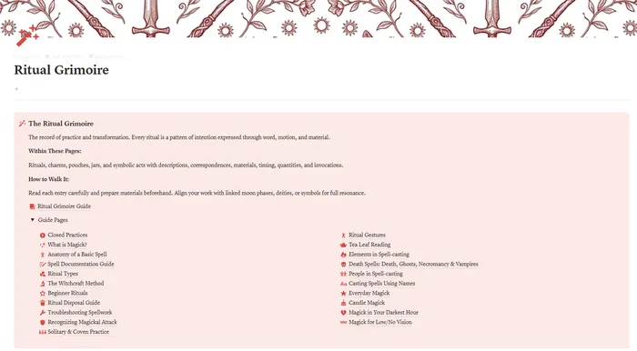

Course
Witchcraft 101
Foundations of Magick ✧ Self-Paced Beginner Course
$10+
- 7 units
- Readings, key terms & homework
- Self-paced in Google Classroom
Due to the digital nature of this product, no refunds will be provided.
A self-paced beginner course for anyone who wants to actually learn witchcraft without the questionable sources!
This course walks you from the ground up. You'll learn what witchcraft is, how to build your practice, and how to cast your first spell with real understanding behind it. Everything is grounded in published sources and hands-on practice you do yourself.
What you'll learn:
- Unit 1: What Is Witchcraft
- Unit 2: Tools and Altars
- Unit 3: Correspondences
- Unit 4: Spiritual Hygiene
- Unit 5: Shadow Work
- Unit 6: Spell Preparation
- Unit 7: Casting a Spell
Each unit includes readings, key terms, practical application, a discussion prompt, and homework. You'll build real practice alongside the theory as you go.
How it works:
The course is hosted in Google Classroom and fully self-paced. Work through it in a weekend or stretch it over months, whatever fits your life.
Who this is for:
Anyone starting from zero who wants a real foundation before diving into spellwork. No prior experience needed.